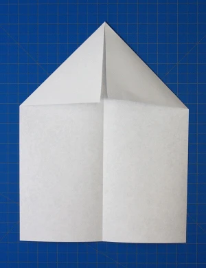
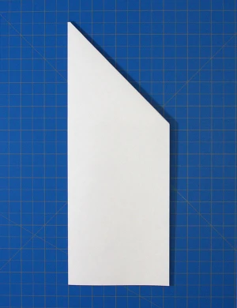
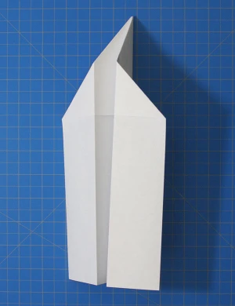

1步骤 1
把纸对折。
Fold the paper in half.
把纸对折。
Fold the paper in half.

Unfold and then fold the top two corners into the center line.

再次把纸对折。
Again, fold the paper in half.

Finally, fold the edges down to meet the bottom of the body.